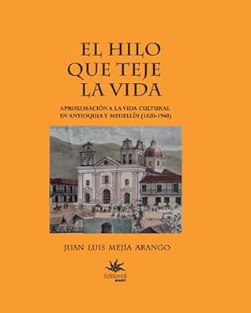

El hilo que teje la vida: Aproximación a la vida cultural en Antioquia y Medellín (1820-1940) (Spanish Edition)
Reseña local de ejemplo

Ver reseña en GoodReads (necesita cuenta)
El libro de Juan Luis Mejía me acercó a ese mundo y me hizo verlo fascinante, a mi que lo he rechazado siempre. Tengo que confesar que el camino me lo había abierto otra autora, Ángela Becerra con Algún día hoy, el libro novelado que nos cuenta de manera magnifica la vida Betsabé Espinal y que está ambientado (al mismo tiempo y con licencias de tiempo) con los personajes y acontecimientos más famosos de su época, principios del siglo XX.
El hilo que teje la vida, va de 1820 a 1940. Está profusamente documentado con datos, fotografías, documentos, joyas del tiempo que en su rigurosa investigación el autor logró reunir para darle todo el peso histórico a este gran libro, porque además es muy voluminoso y había que sentarse a leerlo en un sofá cómodo o en una mesa y estar dispuesto a leerlo como si tuviéramos en nuestras manos un pesado tomo de la biblioteca de nuestros abuelos.
Lo disfruté mucho, conocí personajes y finalmente hilé mucha información que tenía suelta. Me sorprendió gratamente que su autor tiene claros conceptos modernos de civilidad, como por ejemplo, el verdadero valor del trabajo de la cultura de los indígenas y hace una crítica de cómo era vista por la creciente sociedad de Medellín de ese período, de manera desdeñosa e infravalorada.
Sólo me hubiera gustado que incluyera más del trabajo literario y artístico de más mujeres. Yo sé que no eran muchas pues las tenían prácticamente condenadas al trabajo del hogar, pero estoy segura de que fueron muchas más de las que él expone aquí (de las que también sé que hizo un gran trabajo investigativo) pero que me parece le quedó faltando porque si finalmente se trata de hacer un trabajo completo (cómo se pretende) debe incluir a las mujeres que fueron invisibilizadas por el quehacer artístico y literario que históricamente sólo ha tenido en cuenta a los hombres.
Pero soy consciente de lo fácil que es para mi sentarme a hacer una crítica al lado de este trabajo monumental y por ningún motivo quiero restarle todo el valor que tiene este libro para mi.
Agradezco a Juan Luis Mejía este regalo que nos hizo, todo su trabajo de investigación y de escribirlo además de forma tan amena.